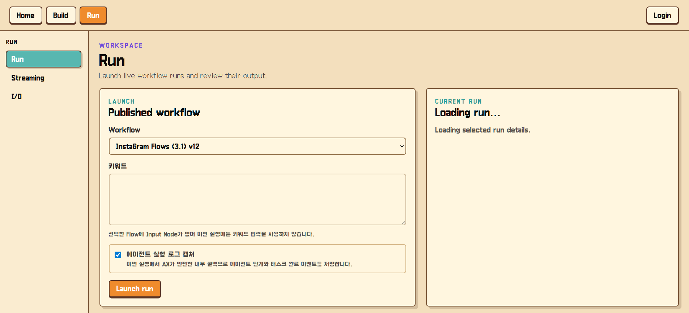
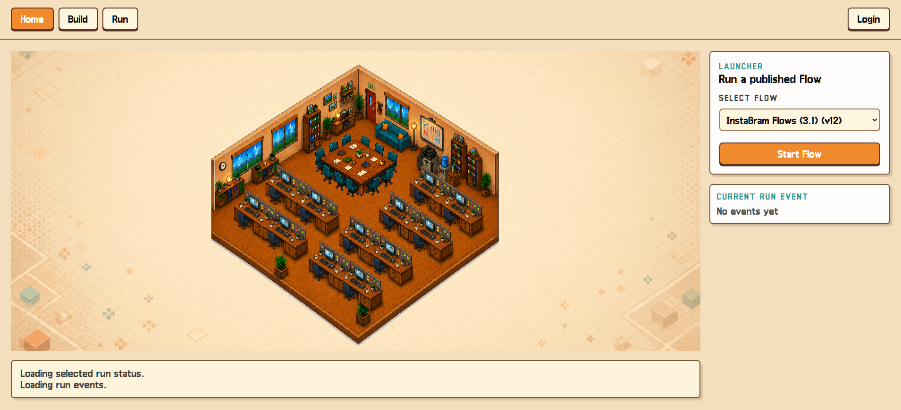
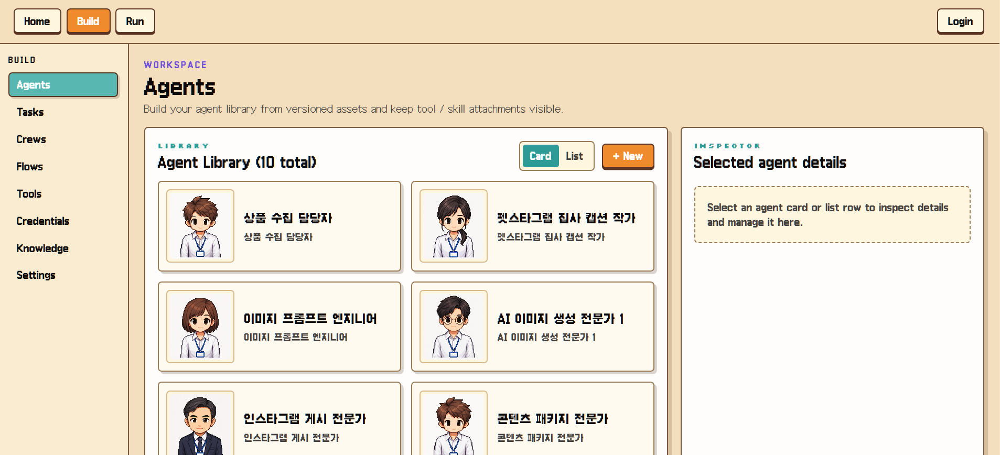
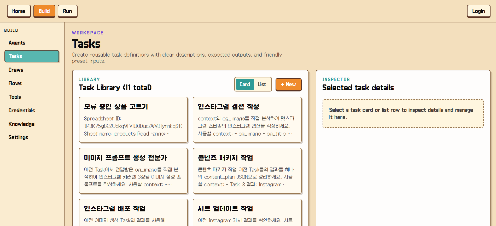
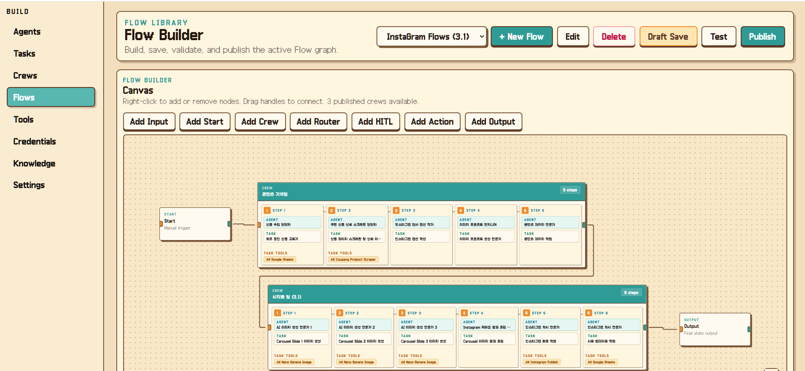
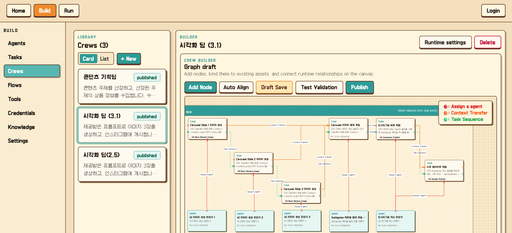

Overview
프로젝트 소개
사용자는 Agent와 Task를 만들고, 실행 단위를 그래프로 연결한 뒤, 실행 과정과 결과를 시각적으로 확인할 수 있습니다.
Project
AI Agent, Task, Tool의 실행 흐름을 시각적으로 구성하고 확인하는 오케스트레이션 인터페이스

Overview
사용자는 Agent와 Task를 만들고, 실행 단위를 그래프로 연결한 뒤, 실행 과정과 결과를 시각적으로 확인할 수 있습니다.
Problem
AI Agent 실행은 내부 단계가 많아 사용자가 현재 어떤 작업이 진행 중인지 이해하기 어렵습니다. 이를 노드와 실행 상태 중심의 화면으로 풀었습니다.
Flow
Agent·Task 생성 → Crew 그래프 구성 → Flow 그래프 구성 → 실행 → 이벤트와 결과 확인
Troubleshooting
그래프 편집 상태와 실행 상태가 한 화면에서 섞여 사용자가 현재 맥락을 파악하기 어려웠습니다.
생성, 검증, 실행, 결과 확인 단계를 같은 시각 언어로 표현하고 있었습니다.
노드 편집 영역과 실행 상태 피드백을 분리하고 단계별 상태를 카드와 연결선으로 구분했습니다.
AI 워크플로 UI는 멋진 그래프보다 사용자가 다음 행동을 이해하는 구조가 더 중요했습니다.
Screens






Learning
React Flow 기반 인터페이스에서 도메인 모델과 화면 상태를 분리하면 복잡한 실행 흐름도 안정적으로 표현할 수 있습니다.